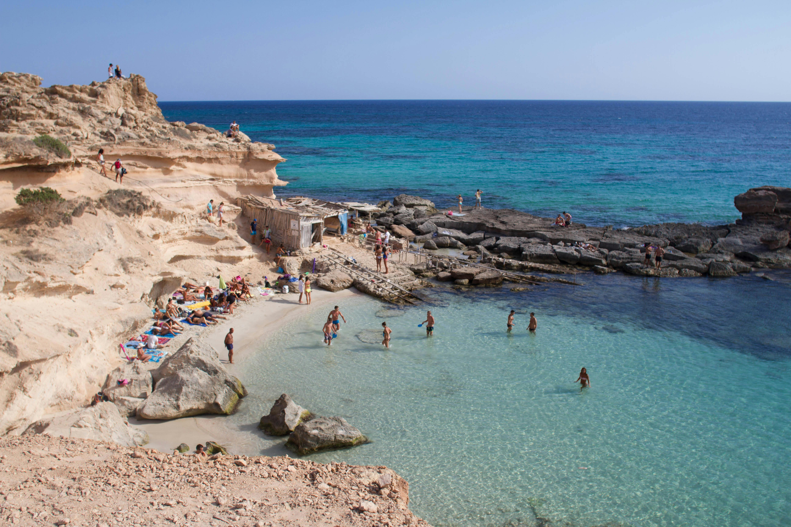
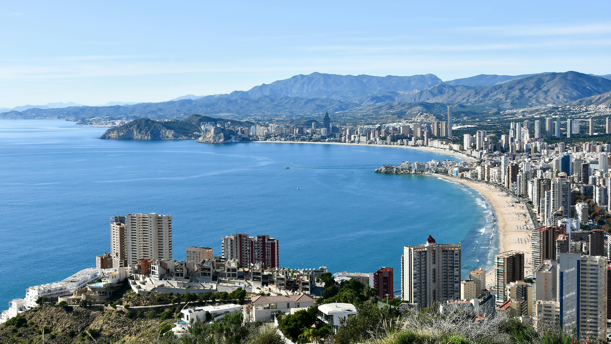
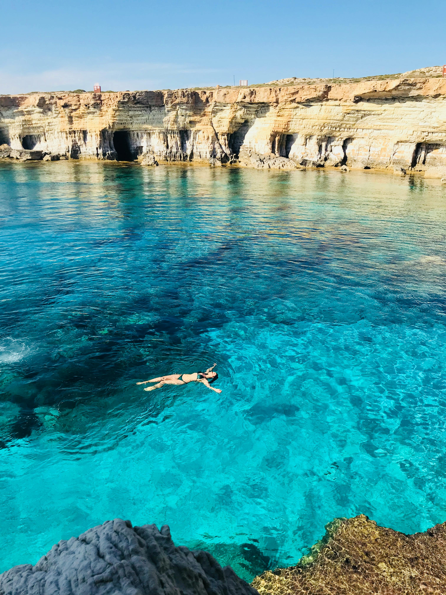
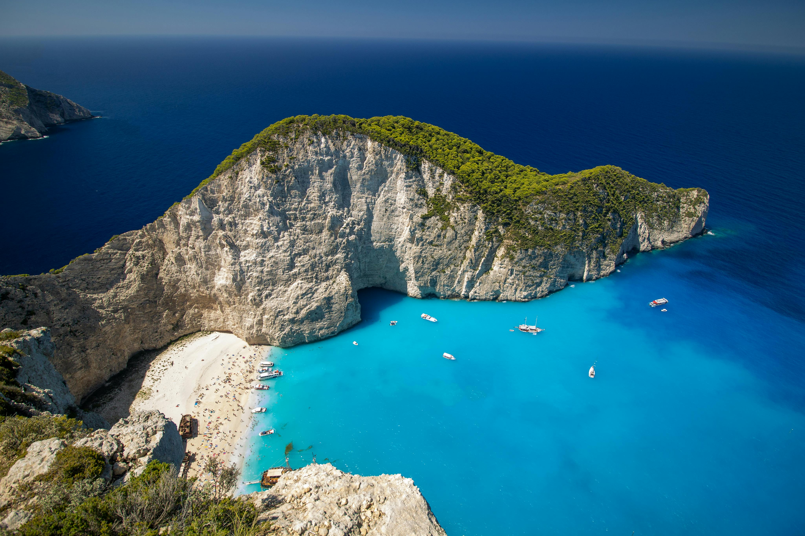

Party Holiday destination 1
Ibiza ~ Spain
Best time to visit: June - August
Best For... Being the world's club-scene queen, Spectacular beaches, Historic old town, Famous hippie markets,
Healing retreats, Bohemian vibes, Gastronomic delights and Stunning sunsets.
Must See... Cala Bassa beach(stunning beach spot), Cala Tarida(adventure cliff jumping), Formentera(beautiful nearby island),
Ushuaia Ibiza Beach Club(music venue), Old Town Bars(lively nightlife spots) and Cala Codolar(hidden beach getaway).
Top Restaurant... Amante Ibiza-Seafood & Mediterranean, La Brasa-Steakhouse & Barbecue, Ibiza Rocks Bar-American & Bar, Lio Ibiza-Mediterranean & European, Ohana Ibiza-Seafood & European, Tapas Ibiza-International & Mediterranean.
Party Holiday destination 2
Magaluf ~ Spain

Best time to visit: June - August
Best For... Nightlife, beautiful beach with its fine sand, clear water
and diverse watersports. Along the beach there are small kiosk bars set up during the day which play great music and there are
some good pubs serving ice cold beers and showing live sport all day long
Must See... Spend the day at Nikki Beach, Eat alfresco at a Magaluf restaurant,
Attend Mallorca Live, Watch the Pirates Adventure (acrobatics, dancing, music, and a real buccaneer's feast), Have fun at Katmandu Park,
Relax on the beach, Charter a boat and Go clubbing.
Top Restaurant... Bondi Beach Magaluf-Bar & Seafood , Blackbeards Beach Bar & Grill-Bar & Mediterranean , Titanic Magaluf-Bar & Cafe , Tom Brown's-Bar & European, Robinson Crusoes-Bar & European, Zhero Boathouse Magaluf-Mediterranean & European.
Party Holiday destination 3
Benidorm ~ Spain
Best time to visit: June - August
Best For... Its fine sandy beaches and crystal clear waters, Outstanding year-round climate,
A full range of first-rate infrastructures and services,
Its iconic skyscrapers and Manhattan-like skyline, A lively nightlife and a charming old town.
Must See... Levante Beach(most iconic beach on Benidorm), Aqualandia Water Park( one of Europe's largest water parks),
Mundomar(marine animal park), Benidorm Old Town (Casco Antiguo), Terra Mitica Theme Park, Poniente Beach(quieter and more relaxed atmosphere), Benidorm Island (Isla de Benidorm),
Tossal de la Cala(panoramic views of Benidorm), Mediterranean Balcony(viewpoint with breathtaking vistas) and Benidorm Cross(The Benidorm Cross, or "Cruz de Benidorm").
Top Restaurant... Amigos Bistro by Nas & Dino-International & Mediterranean, Paneil's-Steakhouse & European, Gusto Benidorm-Steakhouse & Mediterranean, Refuel Bar & Terrace-Bar & British, Benidorm Palace-Mediterranean & European, The Vagabond-French & Mediterranean.
Party Holiday destination 4
Ayia Napa ~ Cyprus
Best time to visit: June - September
Best For... Its beaches, including Nissi Beach and Landa Beach, Its nightclubs, Its 14th century monastery, museum, and several churches,
Cape Greco, WaterWorld Themed Waterpark, Sea caves, a national forest park area, and bicycle paths, Outdoor Sculpture park, seafront walkway, and numerous pieces of street art,
Regular festivals and events showcasing traditional music and dances.
Must See... Makronissos Beach & Tombs, Makronissos Beach & Tombs, Ayia Napa Monastery, Ayia Napa Monastery, Ayia Napa Sculpture Park,
Konnos Bay, Kamara tou Koraka, Nissi Beach, Ayia Napa Square, Profitis Ilias Church, The Blue Lagoon and Waterworld Waterpark Aya Napa.
Top Restaurant... Flames Restaurant and Bar-Steakhouse & Seafood, The Deck Terrace Restaurant-International & Mediterranean, Glasshouse Lounge Restaurant-International & Mediterranean, The Garden of Eden Restaurant-International & Mediterranean, Los Bandidos-Mexican & Vegetarian friendly, Taverna Napa est. 1976-Seafood & Greek.
Party Holiday destination 5
Algarve ~ Portugal

Best time to visit: May - September
Best For... It's golden cliffs and beaches, flavorful cuisine, Stunning coastal scenery,
luxurious resorts, Rich history blending influences from various cultures, Picturesque villages, and array of outdoor activities.
Must See... Benagil Cave, Walk the breathtaking Seven Hanging Valleys Trail, Dine on seafood fresh from the ocean,
Explore charming fishing villages, Explore the coastline by boat and Relax on some of the most picturesque beaches in Europe, such as Praia da Marinha,
Ponta da Piedade, Camilo Beach, and Tres Irmaos Beach.
Top Restaurant... United Kitchens of India-Indian & Asian, Maria's Restaurant & Beach-American & Seafood, Bj's Oceanside-Seafood & Portuguese, Casa do Lago-Seafood & Mediterranean, Churrasqueira Mercado de Alvor-Mediterranean & Barbecue, Ristorante Pizzeria Napoli-Italian & Pizza and Omakase Japanese Kitchen-Japanese & Seafood.
Party Holiday destination 6
Zante ~ Greece
Best time to visit: June - September
Best For... Stunning beaches, crystal-clear turquoise waters, and picturesque landscapes It is a popular tourist destination in Greece,
offering breathtaking views, vibrant nightlife, and a variety of water sports.
Must See... Visit Navagio (Shipwreck) Beach, Go turtle spotting on Turtle Island, Explore Zante Town,
Party all night on the famous Laganas Strip, Day trip to nearby island Kefalonia, Swim in the spring water at Xigia Beach, Spend a morning on Cameo Island,
Water Village waterpark, Splash out at Banana Beach and Take a Full Day Tour of Zakynthos.
Top Restaurant... Zante's Garden-Italian & Mediterranean, Parthenon Restaurant Steak House-Steakhouse & Seafood, Filoxenia-Seafood & Mediterranean, Zante's Bar & Grill-Bar & Canadian, Sirocco Restaurant-Mediterranean & European and Carpe Diem Zante-Seafood & International.